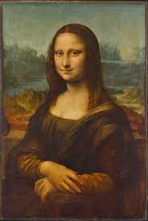

¿Qué hacer en el museo?
El Museo del Louvre es una experiencia única en la vida, podrás recorrer las grandes obras de los cientos de civilizaciones que han habitado el planeta, desde las antiguas civilizaciones como la griega, romana o eqipcia hasta los hitos más importantes en la construcción de las repúblicas actuales, de los mejores planes que puedes hacer en París y en todo el mundo. Conoce más sobre los recorridos que puedes hacer en el museo y adquiere tus entradas.
Comparación Recorridos
| Recorrido Obras Maestras | Tras los pasos de Beyoncé y Jay-Z | Escala a la orilla del Nilo | Los misterios del ala Richelieu |
|---|---|---|---|
| 1H 30M | 1H 30M | 1H 30M | 1H |
| 11 Etapas | 17 Etapas | 13 Etapas | 8 Etapas |
Puedes comprar las entradas para el museo en el siguiente enlace
Recorridos
Recorrido Obras Maestras
Duración: 1H 30M
Algunas obras han sobrevivido al paso de los siglos y se han inscrito en la historia hasta el punto de parecernos eternas. El consenso sobre su valor artístico es unánime entre los expertos de todo el mundo; son obras que se consideran universales.
El Louvre es el lugar ideal para encontrarse cara a cara con obras maestras. En el museo se conservan algunas de las más célebres, ya sean cuadros, esculturas, obras arquitectónicas u objetos, de artistas que pueden ser italianos, franceses o genios anónimos de la Antigüedad. ¡Y es que no hay dos obras maestras que se parezcan!
11 Etapas
Obras maestras antiguas de las colecciones reales, Una llegada providencial al Louvre, Un impulso extraordinario, Frescos italianos en las paredes del Louvre, La fábrica de obras maestras, Tesoros del Renacimiento italiano, Una gran estrella y... 132 fans incondicionales, Romanticismo, actualidad y sensualidad, Prisioneros eternos de su creación, ¿Y si el amor fuera de mármol?, Transparente, pero polémica…
Tras los pasos de Beyoncé y Jay-Z
Duración: 1H 30M
 En 2018, la cantante Beyoncé y el rapero Jay-Z eligieron el
Museo del Louvre como decorado para el videoclip de su dúo “Apeshit”. En él,
vemos a estas dos estrellas del panorama musical actual codeándose con obras de arte excepcionales,
escogidas escrupulosamente por ambos artistas. La Victoria de Samotracia, obra maestra emblemática del museo, es una de las heroínas
del vídeo: a sus pies, en los escalones de la escalera Daru, las bailarinas parecen evocar las olas por las que navega su barco.
En 2018, la cantante Beyoncé y el rapero Jay-Z eligieron el
Museo del Louvre como decorado para el videoclip de su dúo “Apeshit”. En él,
vemos a estas dos estrellas del panorama musical actual codeándose con obras de arte excepcionales,
escogidas escrupulosamente por ambos artistas. La Victoria de Samotracia, obra maestra emblemática del museo, es una de las heroínas
del vídeo: a sus pies, en los escalones de la escalera Daru, las bailarinas parecen evocar las olas por las que navega su barco.
Este recorrido propone seguir los pasos de Mr and Mrs Carter, como también se los conoce, para descubrir los cuadros, las esculturas y los escenarios del Louvre que les inspiraron en su primer álbum en común. Una esfinge egipcia, divinidades griegas, una célebre italiana del Renacimiento, un emperador en todo su esplendor, héroes trágicos y heroínas románticas acuden a la cita.
17 Etapas
La Victoria de Samotracia, La Virgen del cojín verde, La Piedad, La Joconde, Las Bodas de Caná, La balsa de La Medusa, Las sombras de Francesca da Rimini y de Paolo Malatesta, Oficial de cazadores a caballo de la guardia imperial a la carga, La coronación del emperador Napoleón I y de la emperatriz Josefina, Madame Récamier, El juramento de los Horacios , Las sabinas, Techo de la galería de Apolo, Venus de Milo, Hermes atándose la sandalia, Gran Esfinge de Tanis, Retrato de una mujer negra.
Escala a la orilla del Nilo
Duración: 1H 30M
El Louvre es uno de los mayores museos del mundo dedicados al antiguo Egipto y su marco es perfecto para trasladarse a la época de los faraones y sentirse egipcio o egipcia por un instante. Para empezar, hay que saber que los egipcios creían en distintas divinidades, con forma humana o animal, presentes en cada momento de la vida cotidiana. Además, como tenían previsto ir al reino de los dioses y las diosas después de la muerte, en las tumbas acostumbraban a rodearse de sus objetos familiares, para así poder utilizarlos en el más allá. Así es como mucho de estos objetos (muebles, juegos, joyas…) nos han llegado perfectamente conservados. Sin embargo, no hay que olvidar que se trata de testimonios de la vida cotidiana de las personas más acomodadas. La mayor parte de la población no tenía los medios suficientes para embalsamarse, comprar un sarcófago o una tumba, llenarlo con sus riquezas y decorarlo con escenas de su vida en la tierra...
13 Etapas
La protección de la Gran Esfinge, ¡Imposible (re)conocerlos a todos!, El Nilo, fuente de vida, Trabajar la tierra o contar el grano, Una profesión selecta, Útil y hermoso a la vez, Un salón de belleza a la egipcia, Los juegos de mesa, una distracción muy popular, El templo: la morada de los dioses, Un caparazón para el gran viaje, El secreto de la vida eterna, Unos vasos que no conviene abrir..., ¡Fin del viaje!
Los misterios del ala Richelieu
Duración: 1H
Dejando a un lado las grandes obras maestras imprescindibles, como La Gioconda o la Venus de Milo, en el Louvre hay muchísimas maravillas menos conocidas pero igualmente excepcionales. Este recorrido que te proponemos por el ala Richelieu del museo te embarcará en un viaje espaciotemporal que te llevará de los jardines de Luis XIV a las fiestas del Segundo Imperio francés pasando por las ciudades de la antigua Mesopotamia.
8 Etapas
El patio Puget, Lección de humildad, El león y la serpiente, Ebih-Il de Mari, La ignorancia de la ley no exime de su cumplimiento, El interior de un palacio asirio, Del palacio al museo: los aposentos del ministro, Las fiestas del Segundo Imperio.